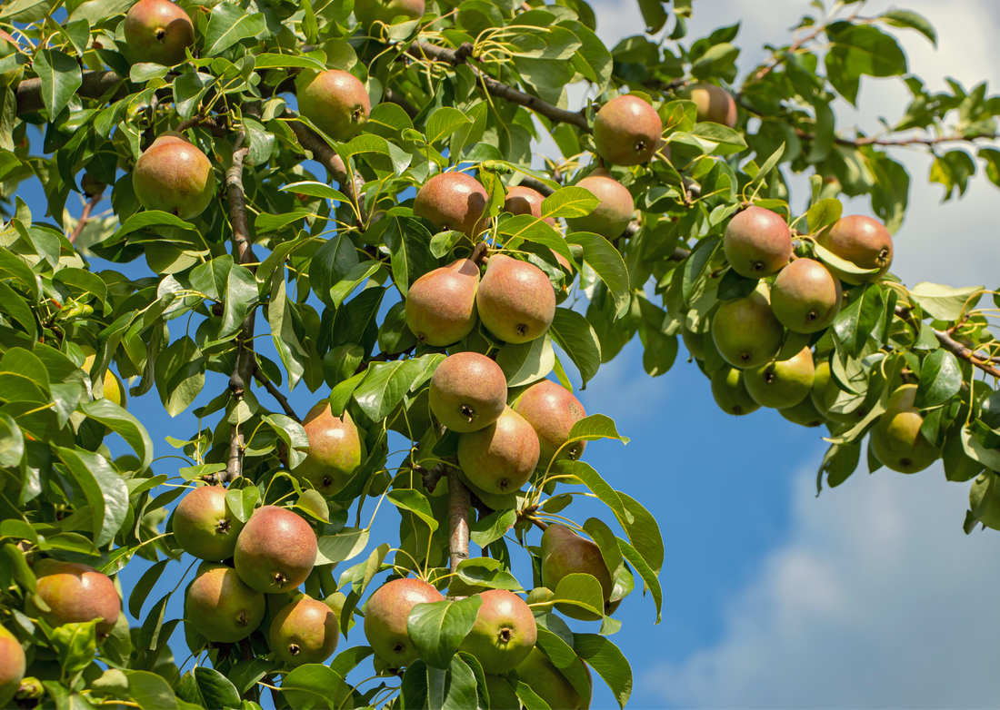
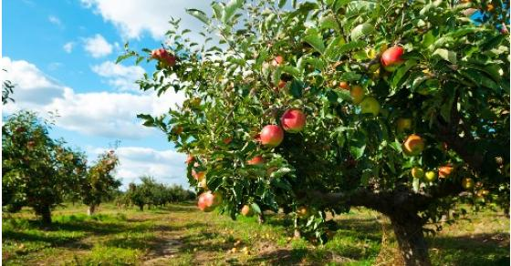

Ovocné stromy
 |
K málokterému ovocnému stromu se váže tolik tradicí a pověr, v květnu se pod ní schází spousty zamilovaných, o pár dní později už můžeme dávat první třešňové páry za uši místo náušnic, v zimě zase někteří čekají, jestli jim třešňové větvičky vykvetou ve váze. Kromě toho všeho je třešeň vysoce chutné a variabilní ovoce, se kterým si šikovná hospodyňka snadno poradí a navíc, úplně snadno ho v dnešních supermarketech zrovna nekoupíte, tudíž mít tyto zdatné stromy na zahradě, je velkou výhodou. |
|
 |
Klasika českých zahrad. Buďto je nesnášíte, nebo naprosto zbožňujete, nic mezitím. Pokud patříte do té první kategorie, neměli byste se nechat odradit, pravděpodobně jste dosud neochutnali tu správnou odrůdu. Na té totiž záleží nejvíce. Zkuste si vybrat některou z námi nabízených. Určitě změníte názor. A nebo Vás ho přiměje změnit třeba takový výborný hruškový koláč, pro milovníky něčeho „ostřejšího“ určitě stojí za zmínku, že hruškovice z odrůdy „Williams“ je jednou z nejlepších. Hrušky jsou bohaté na vitamín C, zejména pod slupkou. |
|  |
Jabloně jsou u nás v republice nejrozšířenějším druhem ovoce. Rozlišujeme je podle doby zrání a využití, a to na jabloně letní, podzimní a zimní. Vybírat můžete z velkého množství odrůd. Nabízíme jabloně k přímé konzumaci, k zavařování, na uskladnění nebo odrůdy, které se hodí i k tepelnému zpracování. Jablka obsahují celou řadu látek prospěšných organismu, zvyšují imunitu, mají vliv na odolnost vůči stresu, doporučuje se konzumovat jedno jablko denně. |
Hlavní stránka